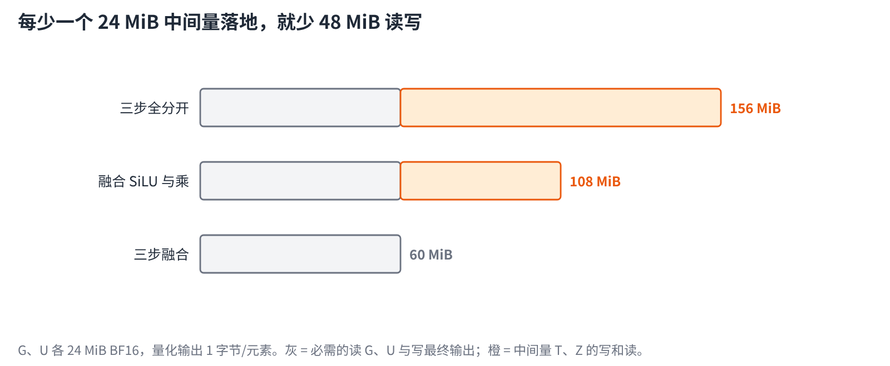
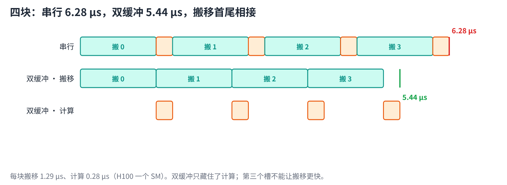
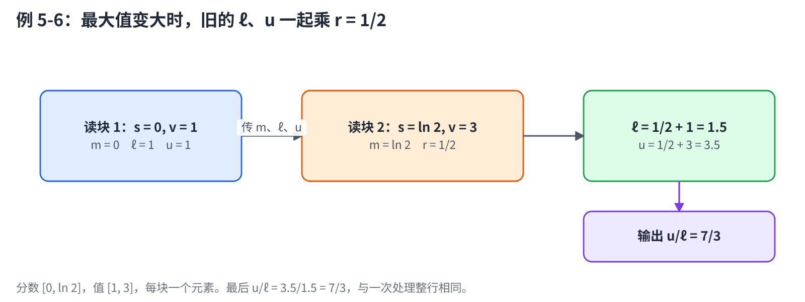
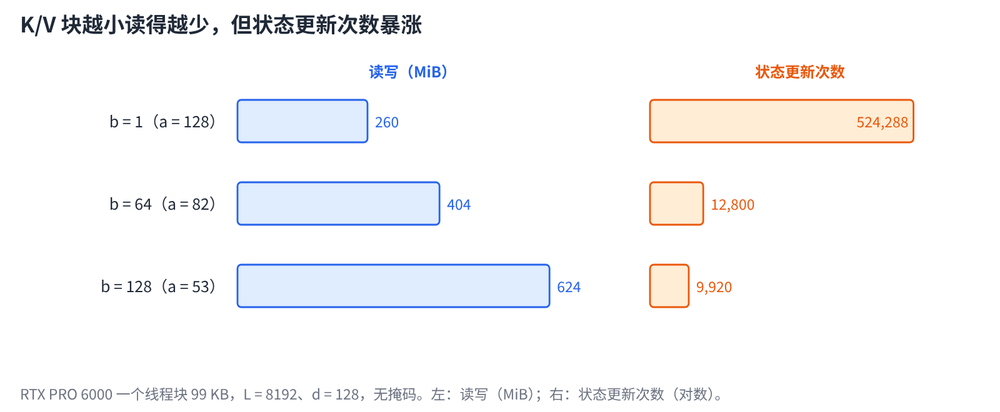
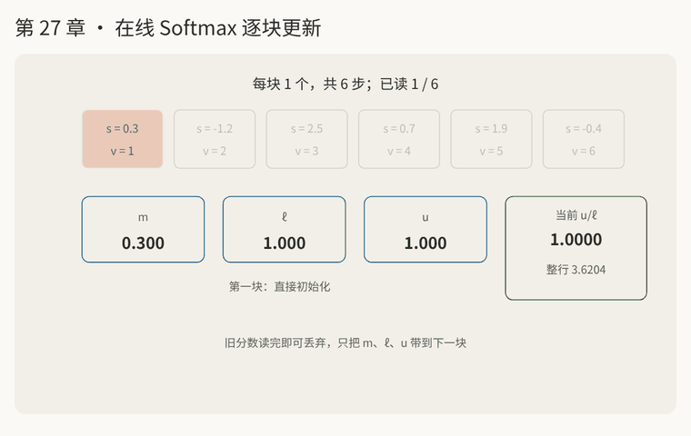

第 27 章 · 算子融合与 FlashAttention：中间结果不落地
本地运行
git clone https://github.com/wikieden/ai-infra-from-constraints
cd ai-infra-from-constraints/code/notebooks
pip install jupyterlab torch numpy
jupyter lab ch27_fusion_flash.ipynb也可以下载后直接用 VS Code 打开 .ipynb 运行。需要 GPU 的章节在 Colab 里选「代码执行程序 → 更改运行时类型 → GPU」。
本章回答：SiLU 和乘法放进一个 kernel，省掉的到底是什么？两个缓冲槽为什么只把 6.28 μs 缩到 5.44 μs？Softmax 要整行的分母，FlashAttention 凭什么一块一块地算、还和原来一样？
讲解日期：2026-11-24 · 上一章：第 26 章 单个算子：分块、布局与切分 · 下一章：第 28 章 编译器：表达、变换与选择
对应原文：materials/ai-infra-book/manuscripts/05-算子与运行时.md§5.3 L339–L480（例 5-4 到 5-6，图 5-14 到 5-20）
本章缩写：SiLU = Sigmoid Linear Unit（S 形 / 线性 / 单元，\(x \cdot \sigma(x)\)）· SDPA = Scaled Dot-Product Attention（缩放 / 点积 / 注意力，PyTorch 的注意力接口）· stage = CUTLASS 里流水的缓冲级数。全部缩写见 缩写与术语表
第 26 章在一个算子内部复用输入。本章看相邻算子之间：前一个的输出马上是后一个的输入，能不能不写回去再读出来。
讲解
第一步：融合省掉的是中间张量的一次写和一次读（2026-11-24）
类比：流水线上两道工序。 前一道做完一个零件，直接递给下一道，而不是先送回仓库、再让下一道去仓库取。两道工序的活一样多，省的是来回跑。
FFN 的激活链（原文 L345–L357）：\(G = XW_g\)、\(U = XW_u\)，\(Z = \operatorname{SiLU}(G) \odot U\)，G、U、Z 都是 \([1024, 12288]\) BF16，各 24 MiB。Z[i, j] 只依赖 G[i, j] 和 U[i, j]，读到一片就能算出最终结果。
例 5-4：
| 方案 | 读写 |
|---|---|
| 分开：\(T = \operatorname{SiLU}(G)\) 读 G 写 T（48），\(Z = T \odot U\) 读 T、U 写 Z（72） | 120 MiB |
| 融合：读 G、U，局部算完，写 Z | 72 MiB |
省下的 48 MiB 正是 T 的一次写和一次读，时间比 \(72/120 = 0.6\)；实测 14.2 → 7.7 μs，约 1.8 倍。
再接一个按固定 scale 的 1 字节量化（原文 L359–L365）：
| 融合范围 | 读写 | 显存峰值 |
|---|---|---|
| 三步全分开 | 156 MiB | 72 MiB（G、U、T 同时在） |
| 融合前两步 | 108 MiB | |
| 三步融合 | 60 MiB | 60 MiB（G、U、输出） |

图 27-1 · 读写减少 96 MiB，峰值却只减少 12 MiB：同一块显存可以反复读写，容量和访问量是两回事。融合后的舍入规则要和原来一样（BF16 的中间舍入仍要做）。
场景代码：torch.compile 会把逐元素链融合成一个 Triton kernel（真实 API）：
import torch
import torch.nn.functional as F
def act(g, u):
return F.silu(g) * u # eager：两个 kernel，中间 T 落地
g = torch.randn(1024, 12288, device="cuda", dtype=torch.bfloat16)
u = torch.randn_like(g)
fused = torch.compile(act) # Inductor 生成一个融合 kernel
torch.testing.assert_close(fused(g, u), act(g, u))
补基础：为什么融合见《PyTorch 从里到外》第 29 章。
一句话：逐元素的相邻算子融合，省掉中间张量的写回和重读；计算量不变，读写和峰值显存下降的幅度不一样。
第二步：双缓冲只能藏住较短的那一段（2026-11-24）
类比：洗菜炒菜。 洗一盆要 13 分钟，炒一盆 3 分钟。两个盆能让洗和炒同时进行，但炒的人大部分时间在等洗好的菜；再加第三个盆也没用，洗菜的人已经一刻没停。
布局转换（原文 L371）：前一个算子按行写、后一个按块读，另建一份 24 MiB 重排结果要多读写 48 MiB；让前一个直接按后者要的布局写，就省掉。
两个槽（原文 L373–L395）：槽 A 的"搬完"和"用完"是两个时刻。沿用第 25 章 H100 一个 SM：每块搬移 1.29 μs、计算 0.28 μs。
例 5-5：四块，串行 \(4 \times (1.29 + 0.28) = 6.28\) μs；双缓冲
只少 13%，计算单元只忙两成。

图 27-2 · 重叠只藏住了计算，完成时间由搬移决定。
- 第三个槽（CUTLASS 叫 3 个 stage）没用：搬移器已经连续工作。额外的 stage 只在搬移时间不稳定、或单次延迟长于一块计算时才补得上空档，容量随 stage 数线性增长。
- 要更快只能减少每块搬的字节（第 26 章扩大输出块、L2 共享输入块），或换带宽更高的卡。
背压（原文 L397）：重排需要 3 个排队的 16 KiB 块 + 32 KiB 重排空间 = 80 KiB。RTX PRO 6000 单块驻留放得下；要两块同驻，每块最多 \((100\text{ KB} - 2 \times 1\text{ KiB})/2 = 49\) KiB，扣掉重排只剩一个排队槽：搬移器写第二块前必须等计算释放。下游来不及、上游被迫暂停，这就是 背压。
一句话：双缓冲的完成时间由慢的那一段决定；慢的一直在忙时，加槽、加快另一段都没用。
第三步：在线 Softmax：只带三个数往前走（2026-11-24）
类比：选班长的计票员。 每读一张选票，记下目前最高票数、按当前最高票折算的总票数、按同样折算的加权和。出现更高票时，把之前的折算一起按比例缩一下；旧选票读完就可以扔。
为什么难（原文 L415–L421）：一个头、\(L = 8192\)、\(d = 128\)：Q、K、V、O 各 2 MiB，完整 S、P 是 FP32 \(8192 \times 8192\) 各 256 MiB，写一次读一次共 1 GiB，而 Q、K、V、O 本身只要 8 MiB。Softmax 的分母要整行，读到前一块时既不知道最终分母，也不知道后面会不会有更大的分数。
三个状态（原文 L423–L443）：最大分数 \(m\)，以 \(m\) 为基准的指数和 \(\ell\)，同样权重下的值之和 \(u\)。新块到来时：
最后输出 \(u/\ell\)。
例 5-6：分数 \([0, \ln 2]\)、值 \([1, 3]\)，每块一个元素。第一块 \(m = 0, \ell = 1, u = 1\)；第二块把最大值提到 \(\ln 2\)，旧状态乘 \(r = 1/2\)，新项指数为 1：\(\ell' = 1.5\)，\(u' = 3.5\)，输出 \(7/3\)。一次处理整行：权重 1 : 2，\((1 + 2 \times 3)/3 = 7/3\)，一样。

图 27-3 · 箭头传的是统计量，旧分数不用保留。分母和分子里的旧贡献必须一起缩放，相对权重才不变。
块开多大（原文 L447–L467）：RTX PRO 6000 一个线程块 99 KB（101,376 B），一次放 \(a\) 行 Q、一个 \(b \times d\) 的 K/V 槽、\(a \times b\) 分数槽、FP32 输出累加器和三个逐行状态：
| K/V 块 \(b\) | Q 行 \(a\) | 完整扫描 K/V | 读写 | 状态更新次数 |
|---|---|---|---|---|
| 1 | 128 | 64 | 260 MiB | 524,288 |
| 64 | 82 | 100 | 404 MiB | 12,800 |
| 128 | 53 | 155 | 624 MiB | 9,920 |

图 27-4 · 从 b = 64 到 b = 1：少读 144 MiB，更新却多约 41 倍；每次只处理一行 K/V，矩阵乘的一个维度也太小，矩阵单元用不起来。
实测（原文 L471–L477）：RTX PRO 6000、BF16、一个头、8192、因果：PyTorch SDPA 的 MATH 后端约 2.6 ms、新增显存约 848 MiB；FLASH_ATTENTION 后端约 80 μs、约 22 MiB，快约 33 倍。FlashAttention-2 改进线程分工、减少非矩阵运算；FlashAttention-3 用异步让搬移、矩阵乘和 Softmax 重叠（第 25 章的 warp 分工）。
场景代码：指定 SDPA 后端对比（真实 API）：
import torch
import torch.nn.functional as F
from torch.nn.attention import SDPBackend, sdpa_kernel
q, k, v = (torch.randn(1, 1, 8192, 128, device="cuda", dtype=torch.bfloat16) for _ in range(3))
for be in (SDPBackend.MATH, SDPBackend.FLASH_ATTENTION):
with sdpa_kernel(be):
o = F.scaled_dot_product_attention(q, k, v, is_causal=True)
补基础：在线 Softmax 和 FlashAttention 的 kernel 写法见《CUDA 从线程到 Tensor Core》第 21、22 章。
一句话：带着 \(m\)、\(\ell\)、\(u\) 三个状态逐块更新，就不用存完整的 S 和 P；块越小读得越少，但更新越频繁、矩阵单元越难用满。
动画演示：在线 Softmax 逐块更新

可交互版：animations/27-fusion-flash.html（滑块：每块几个元素 1 / 2 / 3 / 6）。
怎么看：
- 上面一排是 6 个分数和对应的值，已读过的变灰（第三步）；
- 中间三格是当前的 \(m\)、\(\ell\)、\(u\)，最大值变大时显示缩放系数 \(r\)；
- 右边比较当前 \(u/\ell\) 和一次处理整行的结果：读完最后一块时两者相等；
- 播放时一块一块读入；把块大小拨到 3 或 6，步数变少，最终结果不变。
练习与作答记录
题 1（第一步）：激活链改成 \([2048, 12288]\)，G、U 各 48 MiB，最后量化成 1 字节。三步全分开、融合前两步、三步融合各读写多少 MiB？
作答记录：（待作答）
题 2（第二步）：每块搬移 0.6 μs、计算 0.9 μs，8 块。串行和双缓冲各多久？这时加快哪一段才有用？
作答记录：（待作答）
题 3（第三步）：分数 \([1, 0, 1 + \ln 3]\)、值 \([2, 4, 6]\)，每块一个元素。写出每步的 \(m\)、\(\ell\)、\(u\)，最终输出是多少？和一次处理整行比较。
作答记录：（待作答）
原书实验 5-2、5-3（L993、L997：融合的固定开销门槛、加第三个元素与预取槽）。想多练可以做。
口诀
零件直接递下一道，不回仓库省来回；读写省一半，峰值省一点；
洗菜慢炒菜快，两个盆够了，第三个盆白搭；
计票只记三个数：最高票、折算总票、折算加权和，换了最高票一起缩。
本章复习卡片
I105（例 5-4：120 → 72 MiB，156 / 108 / 60 与峰值 72 / 60）、I106（双缓冲 6.28 → 5.44 μs、stage 与背压）、I107（在线 Softmax 的 \(m\)、\(\ell\)、\(u\) 与例 5-6）、I108（FlashAttention 块大小：读写 vs 更新次数）。练习做完后，按答错、卡住的地方再补。
附录 · 延伸阅读
留给以后深入学习用，不影响本章主线。★ 是建议先读的。
推荐阅读
| 读什么 | 读哪里 | 读它为了什么 |
|---|---|---|
| ★ AII 第 5 章 | §5.3 L339–L480 | 本章原文，例 5-4 到 5-6 |
| ★ Dao 等，FlashAttention（2022） | §3 算法 1 | 分块与在线 Softmax 的原始写法 |
| Milakov、Gimelshein，Online normalizer calculation for softmax（NVIDIA，2018） | 全文 | 在线 Softmax 的出处（原文 L409 提到） |
| FlashAttention-2 / -3 | 方法一节 | 线程分工、异步与 warp 分工 |
| 《CUDA 从线程到 Tensor Core》第 16、21、22 章 | 异步拷贝流水、在线 Softmax、FlashAttention | CUDA 实现 |
| 《PyTorch 从里到外》第 29、31 章 | 为什么融合、读 Inductor 生成的代码 | 框架怎么自动融合 |
数学原理
- 逐元素可融合：输出只依赖同位置输入，没有跨位置依赖。
- 流水公式：首块先搬，之后每 \(\max(t_m, t_c)\) 完成一块，末块再算一次。
- 指数换基：\(e^{s - m'} = e^{s - m} \cdot e^{m - m'}\)，所以旧的 \(\ell\)、\(u\) 乘同一个 \(r\) 即可。
- 整数约束下的块大小：\(a = \lfloor (S - 2bd)/(6d + 4b + 12) \rfloor\)。
公式清单
| 公式 | 意思 |
|---|---|
| 融合省下 = 中间张量 × 2（写 + 读） | 每个不落地的中间量 |
| \(T_{\mathrm{pipe}} = t_m + (n-1)\max(t_m, t_c) + t_c\) | 双缓冲 |
| \(m' = \max(m, \max s)\)，\(r = e^{m - m'}\) | 换基 |
| \(\ell' = r\ell + \sum e^{s - m'}\)，\(u' = ru + \sum e^{s - m'}V\)，输出 \(u/\ell\) | 在线 Softmax |
| \(2ad + 2bd + 4ab + 4ad + 12a \le S\) | FlashAttention 的片上预算 |
代码对照：把本章的数字用代码算一遍
纯 Python，不需要 GPU。代码在仓库本地
ai-infra/solutions/chapter-code/ch27_fusion_flash.py，配套测试tests/test_ch27.py：
bash cd ai-infra/solutions/chapter-code uv run python ch27_fusion_flash.py # 一步一步打印 uv run pytest tests/test_ch27.py
讲义 ↔ 代码：
| 讲义 | 公式 | 写法 | 跑出来 |
|---|---|---|---|
| 第一步 例 5-4 | 中间量 × 2 | activation_chain_mib(fuse, fuse_quant) |
120 / 72；156 / 108 / 60 MiB |
| 第二步 例 5-5 | 流水公式 | pipe_time(4, 1.29, 0.28) |
6.28 / 5.44 μs |
| 第三步 例 5-6 | 换基更新 | online_softmax(scores, values, block) |
7/3，与 full_softmax 相同 |
| 第三步 块大小 | 片上预算 | flash_tile(b) |
(128, 64, 260, 524288) 等 |
关键几行：
for s0 in range(0, len(scores), block):
s, v = scores[s0:s0 + block], values[s0:s0 + block]
m_new = max(m, max(s))
r = math.exp(m - m_new) if m != -math.inf else 0.0 # 旧状态换到新基准
p = [math.exp(x - m_new) for x in s]
l = r * l + sum(p)
u = r * u + sum(pi * vi for pi, vi in zip(p, v))
m = m_new
代码里才看得到的 3 件事：
- 第一块时 \(m = -\infty\)，\(e^{-\infty - m'}\) 直接写成 0，避免
inf - inf。 - 测试里用 6 个随机分数、块大小 1 / 2 / 3 / 6 都和整行 Softmax 一致：在线算法对任何分块都成立。
flash_tile的访问量 = 扫描次数 × 4 MiB（K、V 各 2 MiB）+ 4 MiB（读 Q、写 O）。
自己改一改（不影响练习答案）：
- 把
flash_tile的片上预算换成 H100 的 227 KB，b = 64 时能放几行 Q？ - 给
online_softmax加因果掩码：第 i 行只看前 i 个位置。 - 给
activation_chain_mib加一个"融合但中间量要保留给反向"的选项，读写变成多少？